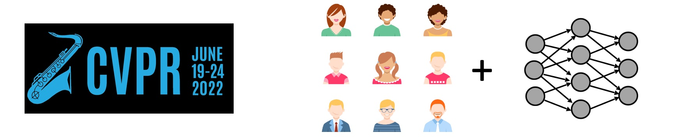

CVPR 2022 Tutorial onHuman-Centered AI for Computer Vision |
||
Afternoon Session, June 20, 2022 |
||

Deep learning models such as ConvNet and transformers have made huge progress in many computer vision applications, from image recognition, image generation, toself-driving vehicles. Through this progress, researchers and developers mainly focus on building AI models to improve the accuracy and evaluation numbers on various benchmarks. As the data-driven models are going deeper in search of better recognition accuracy, it becomes even more difficult for humans to examine the model behaviors.
Human-centered AI (HCAI) represents a fresh way of thinking. HCAI puts the human users at the center of AI model design, emphasizing the meaningful interactions and mutual understandings between humans and AI models. In HCAI, model accuracy is just one dimension to gauge the AI model, meanwhile, there are many human-centric properties we should also care about, such as interpretability, interactivity, fairness. Working towards HCAI will increase the reliability, safety, trustworthiness of AI models and systems in the real world. Furthermore, HCAI empowers people and ensures the human control of intelligent machines.
This tutorial is designed to broadly engage the computer vision community with the HCAI. We will introduce the concept of HCAI in the context of computer vision applications, from image recognition, image generation, to embodied AI. We will review the recent progress on many human-centric properties of AI models, such as fairness, interpretability, and interactivity. We will also discuss the ethical principles of HCAI in computer vision and practical steps for effective governance.
14:00 - 14:05 EDT: Opening Remark
Lecture 1 by : TBD
Lecture 2 by : TBD
Lecture 3 by : TBD
Lecture 4 by : TBD
Panel discussion
Please contact Bolei Zhou if you have question.
Previous Tutorials on Interpretable ML for CV: CVPR'20, ICCV'19, CVPR'18